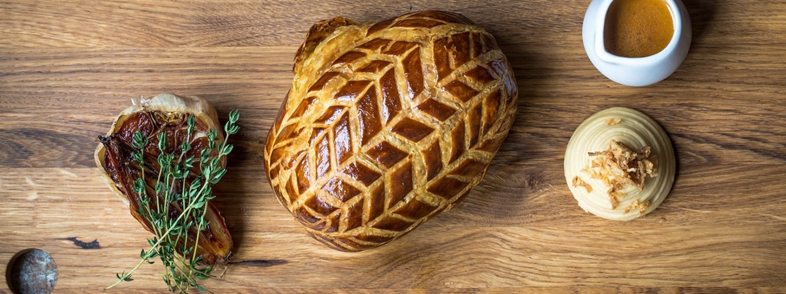

Dank Wellington
AYO! Wanna chef it like it my main man Ramsay ya dingwad? Keep scrolling down for dem sweet sweet ingredients and instructions on how to make this voluptuous dish.
Please give your full on ATTENTION and sweet loving as you go through these steps as you absolutely cannot fuck it up yung wan! As long as you go through these steps at your own pace, you should be gucci.
Once you nail this recipe, the underlings under from wence you came from will treat you like a god!!!!
Here's what you need: (I gotchu fam)
INGREDIENTS
- 2 x 400g beef fillets
- Olive oil, for frying (fucking duh)
- 500g mixture of wild mushrooms (We be wildin son!)
- 1 thyme sprig, leaves only
- 500g puff pastry
- 8 slices of Parma ham (proscuito you dingus!)
- 2 egg yolks, beaten with 1 tbsp water and a skosh of salt
- Sea salt and freshly ground black pepper
For the red wine sauce
- 2 tbsp olive oil
- 200g beef trimmings (ask the butcher to reserve these when trimming the fillet)
- 4 large shallots, peeled and sliced
- 12 black peppercorns
- 1 bay leaf
- 1 thyme sprig
- sploosh of red wine vinegar
- 1 x 750ml bottle red wine
- 750ml beef stonk
LE INSTRUCTIONS FOO
- Wrap each piece of supple beef tightly in a triple layer of cling film to set its shape, then chill overnight.
- Remove the cling film, then quickly sear the beef fillets in a hot pan with a little olive oil for 30-60 seconds until browned all over and rare in the middle. Remove from the pan and leave to cool.
- Finely chop the shrooms and fry in a hot pan with a little olive oil, the thyme leaves and some seasoning. When the mushrooms begin to release their juices, continue to cook over a high heat for about 10 minutes until all the excess moisture has evaporated and you are left with a mushroom paste (known as a duxelle ya nimrod!). Remove the duxelle from the pan and leave to cool.
- Cut the pastry in half, place on a lightly floured surface and roll each piece into a rectangle large enough to envelop one of the beef logs. Take it to the fridge - Timbaland>.
- Lay a large sheet of cling film on a work surface and place 4 slices of Parma ham in the middle, overlapping them slightly, to create a square. Spread half the duxelle evenly over the ham.
- Season the beef glands, then place them on top of the shroom-covered ham. Using the cling film, roll the Parma ham over the beef, then roll and tie the cling film to get a nice, evenly thick log (can you say, yummers?!). Repeat this step with the other beef fillet, then bing chilling for at least 30 minutes.
- Brush the pastry with the egg wash. Remove the cling film from the beef, then wrap the pastry around each ham-wrapped fillet. Trim the pastry and brush all over with the egg wash. Cover with cling film and bing chilling for at least 30 minutes.
- Meanwhile, make the red wine sauce. Heat the oil in a large pan, then fry the beef trimmings for a few minutes until browned on all sides. Stir in the shallots with the peppercorns, bay and thyme and continue to cook for about 5 minutes, stirring frequently, until the shallots turn golden brown.
- Pour in the vinegar and let it bubble for a few minutes until almost dry. Now add the wine and boil until almost completely reduced. Add the stock and bring to the boil again. Lower the heat and simmer gently for 1 hour, removing any scum from the surface of the sauce, until you have the desired consistency. Strain the liquid through a fine sieve lined with muslin. Check for seasoning and set aside.
- When you are ready to cook these heavenly logs, score the pastry lightly and brush with the egg wash again, then bake at 200°C/Gas 6 for 15-20 minutes until the pastry is golden brown and cooked. Rest for 10 minutes before carving.
- Have a bruh moment cuz ya done fucked up
- lol jk reheat the sauce. Serve the beef wellingtons sliced, with the sauce as an accompaniment.